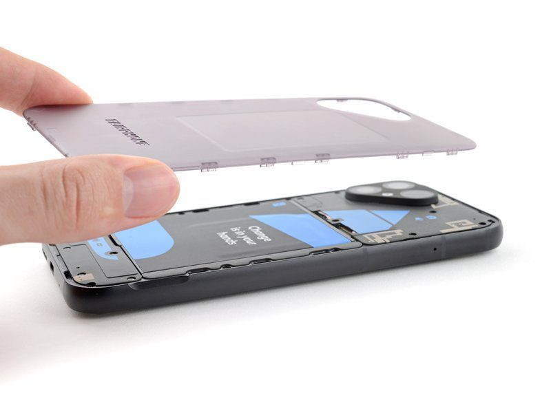
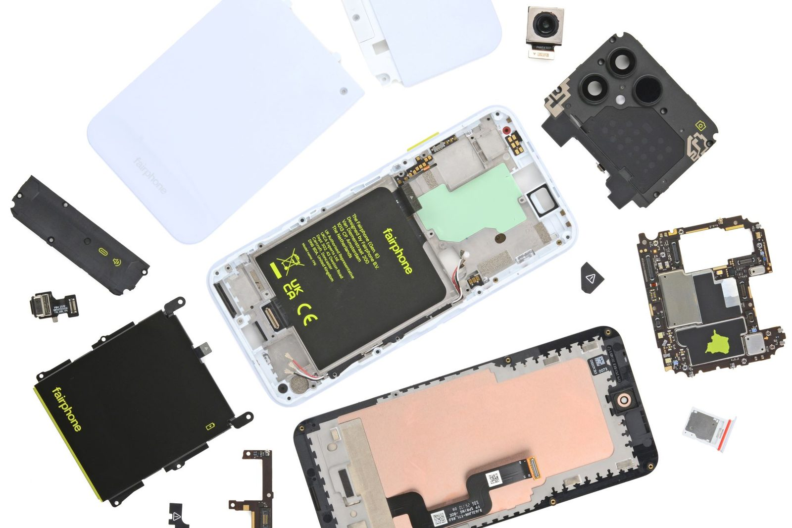
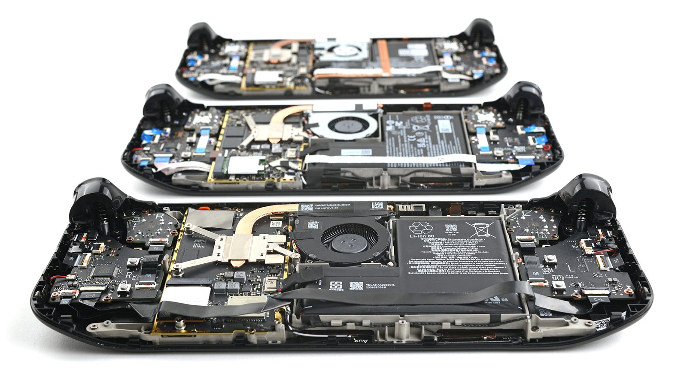

可维修设计 7 篇

Fairphone 5 卡扣后盖与免胶可换电池
Fairphone 5 的后盖只靠一圈卡扣扣在机身上，用指甲从右下角缺口撬开即可取下；电池不粘胶，抠起底边拉片就能拿出；屏幕用 8 颗 3.9 mm 螺丝 + 一个压接连接器固定——在保持 IP55 的同时做到 iFixit 10/10 可维修分。

Fairphone 6 螺丝模块化（屏、电池、摄像头、USB-C）
Fairphone 6 仍然走「可拆、可换模块」路线，但和已收录的 Fairphone 5 不一样：后盖改成「两颗更长的 T5 螺丝 + 向下滑开的下后盖」，电池改成更薄的软包，用螺丝压住（不再只靠指甲和拉片）。屏幕八颗银螺丝、免胶；USB-C 藏在扬声器模块下面，摄像头也可单独更换。代价是防护停留在 IP55，换电池不再是完全免工具。

Framework Laptop 16 Expansion Bay 滑出式显卡模块
Framework Laptop 16 在机身后方做了一条贯穿式的 Expansion Bay：松开中板上的 Interposer 和两颗防丢 T5 螺丝后，整块显卡模块（或空壳）可以从机身尾部平推出来。这和已经收录的 Framework 13 侧边 Expansion Card（把 USB-C 转成 HDMI / USB-A 的小卡）不是同一件事——16 寸两边仍然可以插扩展卡，Bay 则是用来换独显或空仓的大滑块。

Framework 笔记本模块化扩展卡与磁吸边框
Framework 13 用 5 颗防丢 Torx 螺丝开底壳、磁吸键盘组件、磁吸屏幕边框、按键弹出的扩展卡（把 USB-C 转成 HDMI/USB-A 等）和 3 颗防丢螺丝的电池，拿到 iFixit 罕见的 10/10 可维修分。

Valve Steam Deck OLED 可维修改版：金属螺纹柱、T6 Torx 与电池撬卡槽
Steam Deck OLED 是一个难得的「代际可维修改版」样本。Valve 官方改动清单写明：后壳螺丝全部改 Torx，并**拧进金属螺纹**（LCD 版是塑料螺纹，反复拆装会滑牙）；减少螺丝种类和常见维修步数；肩键开关从按键小板移到摇杆板；换屏不再需要拆后盖。iFixit 实拆补充：后盖 8 颗 T6 Torx、长 5.8 mm；板间排线从主板底下挪到电池和主板上方，不再在装散热罩时被压伤；电池仍用 4 条强力背胶，但中框底边开了两个撬卡槽。iFixit 可维修评分从 LCD 版的 7/10 升到 9/10。

苹果 iPhone 14 双面可开：中框承力与前后两道密封
iPhone X 到 13 的后盖玻璃胶得极牢，还焊着镜头装饰圈，换后盖几乎要拆光整机、用激光烧胶再刮碎玻璃。iPhone 14（标准版）改了内部架构：**屏幕后面加了一块金属中框，所有内部元件装在中框上**，于是屏幕可以从正面打开，后盖可以从背面打开；**拧下充电口两侧同样两颗 6.8 mm 五星螺丝，前后都能开**，后盖只靠这两颗螺丝、一个排线连接器和较弱的背胶固定。代价是密封周长约翻倍，还需要 10 个 EMI 簧片接触后盖来替代原来的焊接接地。iFixit 把它的可维修评分提到 7/10，是 iPhone 7 之后给 iPhone 的最高分。

苹果 iPhone 16 电解脱粘电池胶
iPhone 16/16 Plus 不再用易脆的拉胶条固定电池，而是用一种通电即脱粘的胶：把电池底边的银色导电片接正极、机内接地螺丝接负极，加 9 V 约 90 秒，胶与铝中框的界面被电化学「氧化脱开」，电池即可无力取出——把「胶粘」从不可维修变成可重复、可预期的拆卸工艺。
模块化设计 5 篇
Fairphone 5 卡扣后盖与免胶可换电池
Fairphone 5 的后盖只靠一圈卡扣扣在机身上，用指甲从右下角缺口撬开即可取下；电池不粘胶，抠起底边拉片就能拿出；屏幕用 8 颗 3.9 mm 螺丝 + 一个压接连接器固定——在保持 IP55 的同时做到 iFixit 10/10 可维修分。
Fairphone 6 螺丝模块化（屏、电池、摄像头、USB-C）
Fairphone 6 仍然走「可拆、可换模块」路线，但和已收录的 Fairphone 5 不一样：后盖改成「两颗更长的 T5 螺丝 + 向下滑开的下后盖」，电池改成更薄的软包，用螺丝压住（不再只靠指甲和拉片）。屏幕八颗银螺丝、免胶；USB-C 藏在扬声器模块下面，摄像头也可单独更换。代价是防护停留在 IP55，换电池不再是完全免工具。

Framework Desktop 免工具面板与标准件模块化
Framework 把笔记本那套「可修、可升级」搬到桌上：侧板靠卡扣上滑就能取下，顶板用带 D 形拉环的手拧螺丝，风扇是标准 120 mm，存储是标准 M.2，主板按 Mini-ITX 出售、可以装进别的机箱。和 Framework 笔记本不同的是，这台为了 256-bit 内存总线的信号完整性，把内存焊死在了主板上——官方把原因说得很清楚，而不是假装「全部都能插拔」。
Framework Laptop 16 Expansion Bay 滑出式显卡模块
Framework Laptop 16 在机身后方做了一条贯穿式的 Expansion Bay：松开中板上的 Interposer 和两颗防丢 T5 螺丝后，整块显卡模块（或空壳）可以从机身尾部平推出来。这和已经收录的 Framework 13 侧边 Expansion Card（把 USB-C 转成 HDMI / USB-A 的小卡）不是同一件事——16 寸两边仍然可以插扩展卡，Bay 则是用来换独显或空仓的大滑块。
Framework 笔记本模块化扩展卡与磁吸边框
Framework 13 用 5 颗防丢 Torx 螺丝开底壳、磁吸键盘组件、磁吸屏幕边框、按键弹出的扩展卡（把 USB-C 转成 HDMI/USB-A 等）和 3 颗防丢螺丝的电池，拿到 iFixit 罕见的 10/10 可维修分。
整机架构 2 篇
Framework Desktop 免工具面板与标准件模块化
Framework 把笔记本那套「可修、可升级」搬到桌上：侧板靠卡扣上滑就能取下，顶板用带 D 形拉环的手拧螺丝，风扇是标准 120 mm，存储是标准 M.2，主板按 Mini-ITX 出售、可以装进别的机箱。和 Framework 笔记本不同的是，这台为了 256-bit 内存总线的信号完整性，把内存焊死在了主板上——官方把原因说得很清楚，而不是假装「全部都能插拔」。
苹果 iPhone 14 双面可开：中框承力与前后两道密封
iPhone X 到 13 的后盖玻璃胶得极牢，还焊着镜头装饰圈，换后盖几乎要拆光整机、用激光烧胶再刮碎玻璃。iPhone 14（标准版）改了内部架构：**屏幕后面加了一块金属中框，所有内部元件装在中框上**，于是屏幕可以从正面打开，后盖可以从背面打开；**拧下充电口两侧同样两颗 6.8 mm 五星螺丝，前后都能开**，后盖只靠这两颗螺丝、一个排线连接器和较弱的背胶固定。代价是密封周长约翻倍，还需要 10 个 EMI 簧片接触后盖来替代原来的焊接接地。iFixit 把它的可维修评分提到 7/10，是 iPhone 7 之后给 iPhone 的最高分。
胶粘封装 3 篇
Valve Steam Deck OLED 可维修改版：金属螺纹柱、T6 Torx 与电池撬卡槽
Steam Deck OLED 是一个难得的「代际可维修改版」样本。Valve 官方改动清单写明：后壳螺丝全部改 Torx，并**拧进金属螺纹**（LCD 版是塑料螺纹，反复拆装会滑牙）；减少螺丝种类和常见维修步数；肩键开关从按键小板移到摇杆板；换屏不再需要拆后盖。iFixit 实拆补充：后盖 8 颗 T6 Torx、长 5.8 mm；板间排线从主板底下挪到电池和主板上方，不再在装散热罩时被压伤；电池仍用 4 条强力背胶，但中框底边开了两个撬卡槽。iFixit 可维修评分从 LCD 版的 7/10 升到 9/10。

苹果 AirPods Pro 全胶粘封装（反面案例）
AirPods Pro 耳机体内用一圈耐酒精的白色橡胶状胶把纽扣电池「包」起来，电池再用焊接线连接；杆部只能用超声波切割才能打开——0/10 的可维修分，是微型化与可维修冲突的典型。
苹果 iPhone 16 电解脱粘电池胶
iPhone 16/16 Plus 不再用易脆的拉胶条固定电池，而是用一种通电即脱粘的胶：把电池底边的银色导电片接正极、机内接地螺丝接负极，加 9 V 约 90 秒，胶与铝中框的界面被电化学「氧化脱开」，电池即可无力取出——把「胶粘」从不可维修变成可重复、可预期的拆卸工艺。